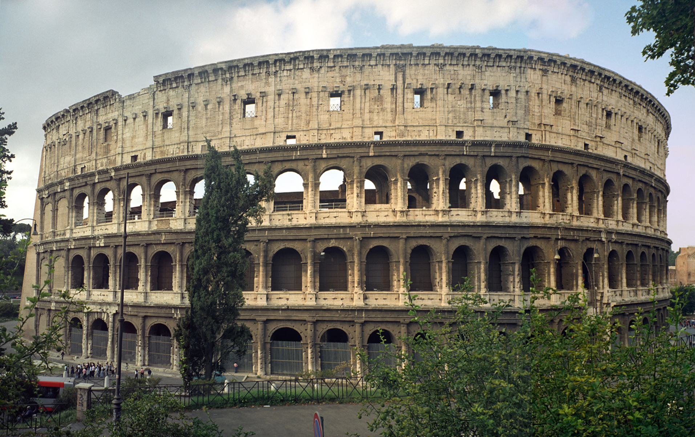

Ancient Roman architecture
Posted on 01.01.2017 by Someone
Ancient Roman architecture adopted the external language of classical Greek architecture for the purposes of the ancient Romans, but grew so different from Greek buildings as to become a new architectural style. ...